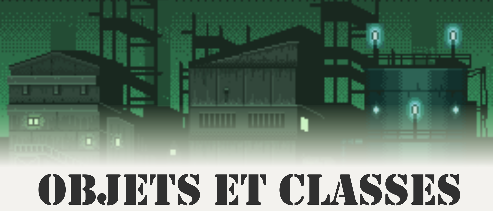

Références à lire avant:
Introduction
Dans la fiche POO, on a eu un petit aperçu de ce que sont les objets, même si on ne les a encore codé en Java. Ne t'inquiètes pas, çà va très vite arriver. On a pu voir notamment avec l'exemple du squelette comment le décomposer en plusieurs objets et actions à réaliser. Par contre, on a pas encore vu la notion de classe. Et donc, là tout se suite, que se passe t-il?
Euh, quoi, que se passe t-il? Ahhh oui, pardon. C'est quoi une classe?
Merci pour ta participation! Et c'est justement dans cette section que je vais expliquer ce qu'est une classe en utilisant le raisonnement inverse que celui qu'on a utilisé pour comprendre ce qu'est un objet.
Attributs et méthodes
Imaginons que l'on s'assoit sur un banc tranquillement, et que l'on observe les feuilles tombées devant nous, ou alors danser avec le vent (il faut t'imaginer en automne, sinon çà marche moins bien). Et là, en tout bon programmeur, on se donne tout de suite le challenge : "Comment je pourrais programmer les feuilles d'un arbre tomber au sol ?"
Et bien il faudrait commencer si tu veux t'entrainer ;) . Alors première chose qu'on essaye de faire, c'est de trouver les propriétés qui sont communes à toutes ces feuilles. Elles ont toutes une forme similaire, elles changent un peu de taille et de poids, un peu en couleur et surtout elles ont une position 3D dans l'espace. Voilà pour les propriétés. Pour les actions, on va vouloir demander deux choses à ces feuilles, qu'elles puissent s'afficher sur notre écran, et qu'elles tombent (sinon notre simulation n'aurait pas d'intérêt). Je pense que ces informations sont suffisantes pour commencer notre modèle. Faisons une petite liste :
Attributs:
- taille
- poids
- couleur
- position 3D
Méthodes:
- afficher()
- tomber()
Ah oui exact, j'ai utilisé beaucoup de termes un peu différents jusqu'ici pour essayer de comprendre avec les mains. A partir de maintenant, on va être de rigueur.
Le terme Attribut est utilisé pour désigner l'état d'un objet. Un attribut peut-être :
- générique comme les entiers, les flottants, un caractère
- un objet comme la feuille ici présente (rappelles toi, un objet peut contenir un autre objet)
Le terme Méthode est utilisée pour désigner l'action que peut effectuer un objet. Une méthode ressemble à çà:
xxxxxxxxxxVisibilité Type nomDeLaMéthode(Type paramètre1, Type paramètre2, ...){ //Corps de la méthode}L'idée n'est pas tellement de s'attarder sur comment on construit une méthode, mais je vais en donner deux mots. Dans l'ordre de lecture:
- Visibilité indique si la méthode peut être utilisée qu'à l'intérieur de l'objet, à l'intérieur et l'extérieur, ... . Les mot-clés utilisés sont les suivants : private, public, protected
- Type indique de quel type est la valeur retournée par la méthode. Une méthode qui a pour but d'additionner deux entiers, va généralement retourner le résultat lui aussi de type entier
- nomDeLaMéthode, comme son nom l'indique c'est le nom que l'on donne à la méthode. Ce qui nous permet plus tard d'appeler le bloc de code à l'intérieur de la méthode en appelant simplement son nom.
- Type paramètre1, Type paramètre2, ... est une liste de paramètres que l'on peut donner à la méthode au moment de son appel. Typiquement la méthode additionner, va prendre en entrée deux entiers pour pouvoir les additionner ensuite et retourner le résultat. Il existe des méthodes où aucun paramètre n'est donné en entrée.
- Corps de la méthode, c'est ici que le bloc de code est écrit pour être exécuté lorsque l'on appelle la méthode par son nom.
La fiche Variables et Méthodes donne pas mal d'informations sur la construction d'une méthode, les différents types utilisées, etc...
Bon bah, on est pas mal, plus qu'à coder çà en Java maintenant! Voici tout de suite le résultat ci-dessous:
xxxxxxxxxx1 public class Feuille2 {3 // Attributs4 public int taille; // un entier5 public float poids; // un flottant6 public Couleur couleur; // un objet de type Couleur7 public Position3D position; // un objet de type Position3D8 9 // Méthodes10 public void afficher() {} // le corps de la méthode est volontairement vide11 public void tomber() {} // le corps de la méthode est volontairement vide 12 }
Oui, c'est normal, je vais tout expliquer! Avant de passer à la prochaine section, j'aimerais souligner que les attributs dans la classe sont déclarées en public, ils sont donc accessibles depuis l'extérieur de la classe, ce qui n'est pas bien en général! Ca fera justement l'objet d'un des grands principes de la POO : l'encapsulation.
Une seule classe, plusieurs objets
On va maintenant expliquer clairement la différence entre classe et objet. Jusqu'à maintenant, on a parlé exclusivement que d'objets, ce qui n'était pas du tout faux, puisque toutes les feuilles d'arbre sont des objets. Mais tu imagines bien qu'on ne va pas écrire un fichier de code pour chaque objet, ce serait interminable surtout si on a des milliers de feuilles. La petite astuce alors, c'est de décrire l'ensemble des attributs et méthodes que l'on a besoin pour décrire un groupe d'objets, ce qu'on a fait avec les feuilles et de mettre cette liste dans une seule et même classe.
Il faut voir une classe comme une sorte de plan de construction qui va décrire la fabrication de chaque objet. Chaque objet va conserver les attributs et méthodes décrits dans la classe, seulement les valeurs d'attributs de l'objet vont changer à la construction et durant l'exécution.
D'ailleurs, si tu regardes bien dans la déclaration des attributs ci-dessous, ils n'ont pas de valeurs. On sait juste que l'attribut taille est de type entier et poids est de type flottant. Pareil pour l'attribut couleur qui est de type Couleur, c'est à dire une autre classe appelée Couleur et position de type Position3D qui fait référence à une autre classe appelée Position3D. On sait aussi que tous ces attributs peuvent être lus/modifiés depuis l'intérieur et l'extérieur de la classe à cause du mot clé public. Lors de la création d'un objet, ce dernier aura ces attributs, mais en plus aura une valeur associée à chacun de ces attributs
xxxxxxxxxx10 // Attributs11 public int taille;12 public float poids;13 public Couleur couleur;14 public Position3D position;Reprenons le processus de création d'un objet de type Feuille à partir de notre classe Feuille.
Pour construire un objet, il faut donc deux choses, la classe (le plan de construction) et les valeurs qu'on va définir pour chacun des attributs décrits dans la classe. Dans l'exemple ci-dessous, on veut construire un objet de type Feuille qui fasse une taille de 10 cm, un poids de 3.5g, d'une couleur rouge et dont sa position 3D est à l'origine, c'est à dire (0,0,0). On veut également construire un autre objet de type Feuille, toujours à partir de la même classe, d'une taille de 5 cm, d'un poids de 2g, d'une couleur verte et qui soit aussi positionné à l'origine.

La feuille rouge et la feuille verte ont les même attributs, MAIS n'ont pas les même valeurs stockées dans les attributs. Cependant, en ce qui concerne les méthodes définies dans la classe Feuille, ce sont les même méthodes que ce soit pour la feuille rouge que pour la feuille verte.
J'ai laissé volontairement vide le corps des méthodes (ci-dessous), c'est à dire que je n'ai pas écrit le code entre les { } permettant d'afficher l'objet ou de le faire tomber. On verra plus tard comment remplir ces méthodes. Il faut juste savoir qu'elles sont là, définies dans la classe et que ces méthodes seront les même pour tous le objets créés à partir de cette classe.
xxxxxxxxxx9 // Méthodes10 public void afficher() {} // le corps de la méthode est volontairement vide11 public void tomber() {} // le corps de la méthode est volontairement videOh Java, construis-moi un objet
On va maintenant voir comment créer un objet à partir de notre belle classe Feuille en langage Java. Pour çà, on va se placer dans la fonction main, qui est un point d'entrée du programme.
xxxxxxxxxx1 // main2 Feuille objetFeuille = new Feuille();
Alors oui, rien que cette ligne suffit à créer un objet de type Feuille. Le mot clé new est très important, puisque c'est lui qui enclenche la construction de l'objet. L'objet va ensuite être stocké dans la variable appelé objetFeuille. Par contre, tu as raison, il n'y a aucune valeur qui a été donnée pour construire l'objet, mais c'est parce qu'ici toutes ces valeurs sont données implicitement. En Java, lorsqu'un objet est construit par défaut, une valeur par défaut va être affectée à chacun des attribut de l'objet construit. D'ailleurs si on affiche objetFeuille, on a quelque chose comme çà:
xxxxxxxxxx1 Feuille objetFeuille = new Feuille();2 System.out.println(objetFeuille.taille); // Affiche 03 System.out.println(objetFeuille.poids); // Affiche 0.04 System.out.println(objetFeuille.couleur); // Affiche null5 System.out.println(objetFeuille.position); // Affiche nullAlors là plusieurs choses.
Accès à un attribut de l'objet : Pour accéder à la valeur d'un attribut de l'objet, il suffit d'écrire le nom de l'objet (ici objetFeuille), suivi d'un point, et enfin le nom de l'attribut (exemple taille) .
Affichage d'une valeur: Pour afficher une valeur, on utilisera usuellement System.out.println et on mettre la valeur à afficher en tant que paramètre, c'est à dire entre les "( )". La fiche Affichage d'information et la méthode ToString .
Valeurs par défaut: Les attributs taille et poids sont de type générique alors que les attributs couleur et position sont respectivement de type Couleur et Position3D (on a pas écrit ces classes). La valeur par défaut pour chaque type générique est fixé par Java: 0 pour les entiers, 0.0 pour les flottants et pour les objets non construits comme l'attribut couleur et position, Java leur donne la valeur null. Pour plus d'information sur la différence entre type objet et type générique, je t'invite à aller lire plus tard la fiche Fonctions et Variables.
Et bien, il faut que toi, tu écrives une méthode un peu spéciale appelée constructeur dans la classe pour décider comment tu vas construire ton objet. Pour ajouter un constructeur à notre classe Feuille, on peut ajouter les lignes suivantes :
xxxxxxxxxx1 // Constructeur2 public Feuille(int inTaille, float inPoids, Couleur inCouleur, Position3D inPosition) {3 taille = inTaille;4 poids = inPoids;5 couleur = inCouleur;6 position = inPosition;7 }Cette fois-ci nous avons un nouveau constructeur qui prend en entrée toutes nos valeurs de paramètre et qui va assigner ces valeurs à chacun des attributs du futur objet de type Feuille.
xxxxxxxxxx1 Feuille feuille = new Feuille(5, 2.0f, new Couleur("red"), new Position3D(0,0,0));2 System.out.print(feuille.taille); // Affiche 53 System.out.print(feuille.poids); // Affiche 2.04 System.out.print(feuille.couleur); // Affiche l'objet couleur5 System.out.print(feuille.position); // Affiche l'objet position
Question : Si un constructeur explicite est défini dans la classe, que se passe t-il si j'appelle à nouveau le constructeur implicite (constructeur sans paramètre) ?

Exercice : Comment écrire un constructeur de la classe Feuille qui prend en entrée seulement la taille et la couleur et qui définit la position à (0,0,0) par défaut et le poids grâce à la formule suivante.
Astuces : Utilises Math.Pi.
Ah oui, en effet, c'est une très bonne question, et bien la réponse est la suivante:
xxxxxxxxxx1 // Constructeur2 public Feuille(int taille, float poids, Couleur couleur, Position3D position) {3 this.taille = taille;4 this.poids = poids;5 this.couleur = couleur;6 this.position = position;7 }this est un mot clé qui désigne l'objet lui même. L'utilisation de this permet alors de bien faire la différence entre le nom des paramètres en entrée et le nom des attributs.
Question : Que fait le code ci-dessous?
xxxxxxxxxx// Constructeurpublic Feuille(int taille) {taille = taille;}
Résumé
- Une classe/objet contient des attributs et des méthodes
- Les attributs de la classe n'ont pas de valeur, car une classe doit être vu comme un plan de construction
- Un objet est construit à partir d'une classe et d'un constructeur
- Le constructeur est implicite si aucun constructeur n'est défini dans la classe, et donc toutes les valeurs des attributs sont définies par défaut
- La valeur par défaut pour les objets est null
- Un constructeur explicite peut être défini dans la classe pour contrôler l'affectation des valeurs
- L'accès a un attribut d'un objet doit se faire de la manière suivante : objet.attribut
- this est un mot clé qui désigne l'objet lui même